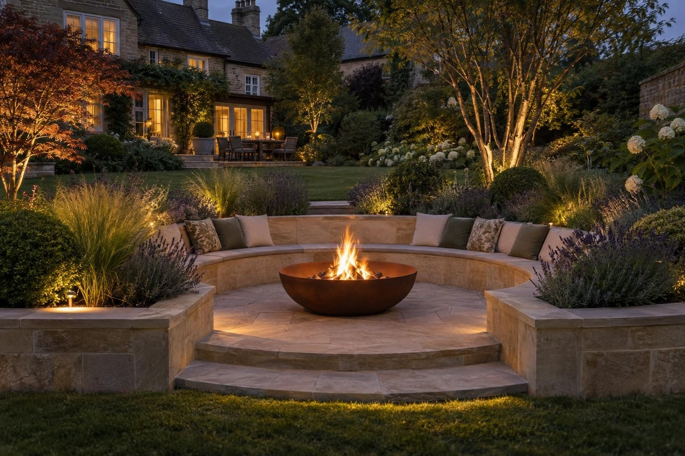

Fire pits & sunken seating in Langham
Fire pits and sunken seating for Langham's larger rear gardens, with drainage designed first because the Vale clay here holds water.
A built-in stone or brick fire pit in Langham typically costs £1,200–£2,000, and a fire pit with built-in seating from about £3,500, with full sunken areas priced per job. The local issue is water. Langham sits on the edge of the Vale of Catmose clay, which drains slowly, and the Langham Brook has a history of exceeding its bank capacity.
- Fire pit with seating
- From £3,500
- Planning
- Not normally needed
- Ground
- Vale clay; slow to drain
- Guarantee
- 5 years, in writing
Our 2026 guide prices. Your fixed price comes in writing after the site visit. Full breakdown: fire pits & sunken seating cost guide.
Fire pits & sunken seating in Langham
Langham plots are often generous, with full rear gardens behind ironstone and limestone houses in the centre and room to spare around the later housing. That makes the village well suited to a proper sunken seating area rather than a token pit on the patio. We build fire pits lined and set into paving, and sunken areas with retaining walls, built-in benches, steps and drainage at the bottom. These are guide prices; we put a fixed price in writing after the visit.
A big garden gives more choice about where the fire goes. Further from the house means less smoke drifting indoors and more room to keep clear of fences and trees, but it also means a longer walk and, on clay, a longer route for the drainage. We work through those trade-offs on site rather than on paper. We also cover Barleythorpe, Ashwell, Whissendine, Cold Overton and Knossington. Every option is marked out on the ground.
What makes Langham different
On the edge of the Vale of Catmose clay, ground in Langham drains slowly, and a sunken area dug into it will hold rainwater unless it has somewhere to go. Rutland's flood strategy notes that the Langham Brook has a history of exceeding its bank capacity, and names Langham among the places with a few properties at river flood risk. We dig a test hole, size the drain or soakaway to suit, and where clay will not take the water we design another route for it.
A typical Langham job is a stone or later house with a long rear lawn. We set a sunken circle part way down the garden, with retaining walls on footings and drainage behind, benches faced in an ironstone-toned material, steps down from a path, and a lined fire pit at the centre. The drain at the low point is designed before the walls go up.
You can check any address on the Environment Agency flood map.
Sources: Rutland conservation areas and Article 4 list · Rutland flood risk strategy.
Permissions in Langham
- PlanningA fire pit or sunken seating area in a rear garden does not normally need planning permission. Keep fires a safe distance from fences, trees and buildings, and be considerate of neighbours: smoke can be a statutory nuisance. Langham's Article 4 direction brings some work facing a road, footpath or open space under planning control, so we check it against your address first. Planning Portal: outbuildings
- TreesTrees in a conservation area need six weeks' notice before work, and protected trees need consent; both are free. Rutland County Council: tree works
- Design and priceWe measure up, check the ground and the planning position, and give you one fixed written price.
Rules checked October 2026.
What you get in Langham
- Drainage designed for slow-draining Vale clay
- Pit sited on larger plots to keep smoke from the house
- Address checked against Langham's Article 4 direction
- Retaining walls built on proper footings with drainage behind
- A drain or soakaway at the bottom so a sunken area never floods
- Built-in benches faced in stone, brick or render to match
The specification
- Area set out and dug down
- Footings and retaining walls built
- Drainage and soakaway at the low point
- Paving laid to falls
- Benches, steps and fire pit built
- Five year workmanship guarantee in writing

Rated 5.0 from 37 Google reviews
“Lewis and the team have just finished a small block paving drive and a porcelain patio in our garden. They arrived on time and were neat and tidy, work all looks as it should. We would use them again.”
Google reviewer · Block paving drive and porcelain patio — Google review
“I had these lads out to do my patio after they were highly recommended by a friend. Did a great job and very professional. Would 100% use them in the future.”
Millan · Patio — Google review
Everything else we do here


Fire pits & sunken seating in Langham: questions
What does a fire pit cost in Langham?
Does Langham's Article 4 direction affect a fire pit?
Our garden gets waterlogged near the brook. Can we still have sunken seating?
How far down the garden should the fire pit go?
Fire pits & sunken seating nearby
Request a site visit in Langham
We measure up, check levels and drainage, and send a written proposal with the build-up, the programme and one whole price. No pressure and no follow-up sales calls.